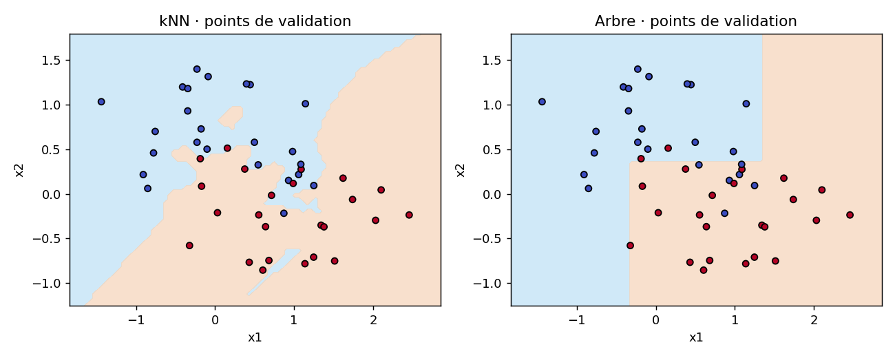

Ting Tan · EEEA · Oct 2026
Exécution de référence mesurée · données pédagogiques fictives
{
"kNN_confusion_true_rows_predicted_columns": [
[
23,
1
],
[
5,
19
]
],
"Tree_confusion_true_rows_predicted_columns": [
[
18,
6
],
[
2,
22
]
],
"neighbors": 1,
"depth": 3,
"validation_size": 48
}| validation_index | x1 | x2 | true | predicted |
|---|---|---|---|---|
| 5 | 0.3762753 | 0.277336 | 1 | 0 |
| 11 | 0.714786 | -0.0173069 | 1 | 0 |
| 13 | 1.0895344 | 0.2741468 | 1 | 0 |
| 18 | 0.1562837 | 0.5114415 | 1 | 0 |
| 34 | 0.9889262 | 0.1162723 | 1 | 0 |
| 38 | 0.8713018 | -0.2182571 | 0 | 1 |
| validation_index | x1 | x2 | true | predicted |
|---|---|---|---|---|
| 3 | 1.0581979 | 0.2157773 | 0 | 1 |
| 9 | 1.2499634 | 0.0927162 | 0 | 1 |
| 15 | 0.5460817 | 0.3242583 | 0 | 1 |
| 18 | 0.1562837 | 0.5114415 | 1 | 0 |
| 19 | 0.9305268 | 0.1501612 | 0 | 1 |
| 22 | -0.1866711 | 0.3933534 | 1 | 0 |
| model | training_accuracy | validation_accuracy |
|---|---|---|
| kNN | 1.0 | 0.875 |
| Tree | 0.8854 | 0.8333 |

{'python': '3.8.20', 'numpy': '1.24.4', 'sklearn': '1.3.2', 'matplotlib': '3.7.4'}